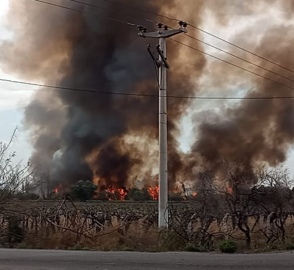
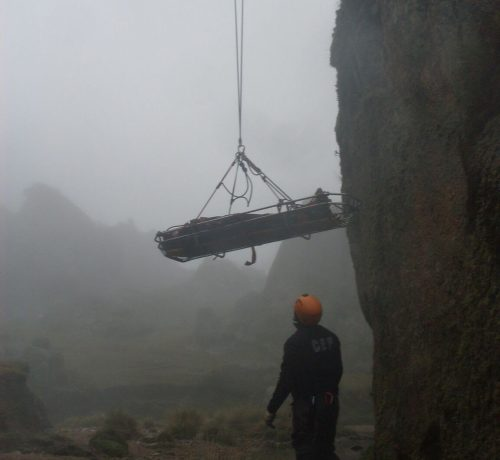

En la actualidad ser responsable o trabajar a cargo de una repartición en zona rural, representa ser responsable de una actividad laboral multidisciplinaria donde la necesidad de dar respuesta antes los escasez de recursos de emergencias, es de suma importancia. Con actos de comunicación y capacitación puedes salvar vidas y hasta una comunidad. La prevención es el eje fundamental para el combate de siniestros y la protección de nuestro ecosistema.
